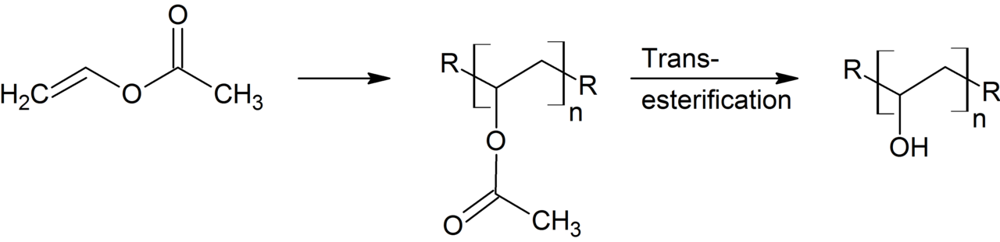

폴리비닐알코올(PVA) (Polyvinyl Alcohol)

| # | 원문 | 한국어 |
|---|---|---|
| 1 | Trans-esterification | 에스터 교환(가수분해에 해당하는 단계) |
쉽게 풀면
폴리비닐알코올(PVA)은 흰색 또는 옅은 노란색 가루로, 물에 넣고 가열하면 서서히 녹아 끈적한 점성 용액이 되는 고분자이다. 사슬마다 수많은 하이드록시기를 가지고 있어 물과 강하게 수소결합을 이루기 때문에 대부분의 합성 고분자와 달리 물에 잘 녹는 특이한 성질을 가진다. 붕사(붕산나트륨) 같은 가교제를 넣으면 사슬들이 서로 연결되면서 순식간에 말랑말랑한 겔(흔히 '액체괴물'로 알려진 슬라임)로 변하는 모습을 관찰할 수 있어 고분자 가교 개념을 눈으로 보여주는 대표적인 실험 재료이다. 필름으로 만들면 투명하고 질긴 막이 되어 포장재나 코팅에도 활용된다.
왜 중요한가
PVA는 붕산과의 가교 반응을 통해 고분자 사슬이 그물망 구조로 연결되는 과정을 시각적으로 보여주는 대표적인 교육용 시약으로, 점탄성과 고분자 네트워크 형성 원리를 설명하는 실험에 널리 쓰인다. 또한 생분해성 필름, 접착제, 하이드로겔 등 다양한 응용 소재 연구의 기초 고분자로도 중요하다.
무엇이고 어디서 작용하나
폴리비닐알코올(PVA)은 탄소 주쇄에 히드록시기가 많이 붙은 수용성 합성 고분자이다. 폴리아세트산비닐을 가수분해해서 만든다.
주요 기능과 기전
필름을 잘 만들고 독성이 낮으며 산소를 잘 막는 것이 특징이다. 생분해성과 생체적합성은 단독으로 쓸 때 한계가 있다. 물에 약한 점은 다른 재료와 섞어서 보완한다. 동결해동이나 화학 가교로 하이드로겔을 만들 수 있고, 콘택트렌즈와 약물 전달 같은 의료용, 접착제와 섬유 사이즈제 같은 산업용으로 쓰인다.
연구에서 다루는 방식
- PVA의 가수분해도와 분자량을 밝힌다.
- 용액 농도와 가교 방식(동결해동 또는 화학 가교)을 적는다.
논문에서는 이렇게 쓰입니다
실제 논문에서
국내 학술지 논문에서 이 용어가 쓰인 문장을 그대로 옮겼다. 제목·학술지·연도와 원문 링크를 함께 적었다.
“준비된 LNP를 폴리비닐알코올(PVA)에 첨가하 고, 전기방사를 통해 LNP가 첨가된 PVA 나노섬유를 성공적으로 제조하였다.”
리그닌 나노입자의 첨가가 전기방사된 PVA 나노섬유의 물리화학적 특성에미치는 영향, 폴리머, 2023 · KCI 한국학술지인용색인 · 원문 보기 ↗
“중성자선의 경우, 5~10 mm의 낮은 두께에서 반대로 선속이 증가되는 현상을 보였으나, 일정 두께 이상에서는 유효한 차폐 효과를 나타내었으며, 프린팅 원료별 차폐 효과는 Nylon, PVA, ABS, PLA, TPU 순서로 점차 낮아지는 결과를 보였다.”
3D 프린팅 기술을 이용한 원료에 대한 방사선 차폐능 평가: FDM 방식의 3D 프린팅 기술을 중심으로, 한국방사선학회논문지, 2018 · KCI 한국학술지인용색인 · 원문 보기 ↗
“PVA, Tween 80 및 20의 첨가에 의해 심황색소 수용액의 색도는 유의적으로 증가했으며, PBS나 NaCl이 포함된 극성 용액에서 심황색소에 대한 이들의 색도 상승 효과는 더 크게나타났다.”
심황색소의 화학적 특성, 광안정성 및 산화방지 활성에 미치는 안정제와 유화제의 영향, 한국식품과학회지, 2024 · KCI 한국학술지인용색인 · 원문 보기 ↗
조금 더 깊게 보면
PVA는 실제로는 비닐알코올 단량체를 직접 중합하는 것이 아니라, 폴리비닐아세테이트를 중합한 뒤 가수분해(알코올분해)하여 아세테이트기를 하이드록시기로 치환해 만든다. 붕산 이온은 인접한 사슬의 하이드록시기 두 쌍과 동시에 결합하여 사슬 사이를 연결하는 가교점 역할을 하며, 이 가교 밀도가 겔의 점탄성 정도를 좌우한다. 가수분해 정도에 따라 물에 대한 용해도와 필름 형성 특성이 달라져, 용도에 맞춰 가수분해도가 다른 등급이 별도로 유통된다.
주의할 점
PVA 자체는 독성이 낮아 비교적 안전하게 다룰 수 있는 시약이지만, 가교제로 흔히 쓰이는 붕산이나 붕사는 반복 노출 시 자극을 줄 수 있어 장갑을 착용하고 눈에 튀지 않도록 주의해야 한다.
참고 문헌
- Bercea, M. (2024). Recent advances in poly(vinyl alcohol)-based hydrogels. Polymers, 16(14), 2021.
- Taylor & Francis. (n.d.). Polyvinyl acetate. Taylor & Francis Knowledge.